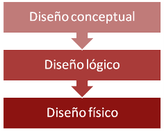

1.1. Diseño de Bases de datos
Importante
El diseño de una base de datos es el conjunto de actividades que permite la creación de una base de datos.
Esta operación se realiza en tres fases: diseño conceptual, lógico y físico.
En general, cabe señalar, que un correcto proceso de diseño evitará que se produzcan ambos problemas (integridad y redundancia) y asegurará que los datos almacenados ocupen el espacio requerido y el acceso a éstos sea rápido y eficaz.
El éxito de una base de datos resulta de la combinación de dos factores:
- La eficacia de las herramientas proporcionadas por el Sistema de Gestión de Base de Datos (SGBD).
- El correcto diseño de la estructura de la base de datos.
Por muy potentes y adecuadas que sean dichas herramientas, el diseño es el punto clave para determinar la validez de una base de datos.
Cada nivel de concreción se caracteriza por la realización de un esquema representativo de la base de datos.
| Conceptual.-realización de un esquema o diagrama conceptual representativo de las entidades y sus relaciones. Es el nivel de abstracción más alto. La herramienta típica utilizada para la representación de este modelo es el diagrama Entidad-Relación. |
 Imagen de elaboración propia |
|
Lógico.-consiste en la representación de un esquema lógico de la estructura. Depende del tipo de SGBD o del modelo elegido (jerárquico, de red, relacional). Existen una serie de reglas que permiten transformar el diagrama Entidad-Relación del diseño conceptual al diseño lógico. |
|
|
Físico.-es una descripción de la implementación de la base de datos. Incluye la descripción de las estructuras de almacenamiento y los métodos de acceso a los datos. Depende de un SGBD específico. La forma más sencilla es implementar el diseño lógico mediante el lenguaje SQL, obteniendo así el diseño físico. |
Comprueba lo aprendido
Indica en qué fase del diseño se realizan las operaciones que aparecen a continuación:
La forma más lógica de clasificar las bases de datos es según su arquitectura, es decir, su organización y estructura. A cada tipo de arquitectura se le denomina modelo.
Sea cual sea el modelo elegido (estructura de la base de datos), es necesario definir las entidades.
Los modelos de bases de datos son:
| jerárquicas | los datos se organizan de forma jerárquica, es decir, en forma de árbol invertido. Cada "padre" puede tener varios "hijos", pero cada "hijo" tiene un sólo "padre". Para bases de datos con mucha información. |
| de red | los datos forman una estructura de red, interrelacionándose entre ellos. Permite que cada "hijo" pueda tener varios "padres". Son difíciles de administrar debido a la gran cantidad de relaciones. |
| relacionales | se basan en el establecimiento de relaciones de tal forma que los datos se agrupan en conjuntos denominados registros y son las filas de una tabla. Los datos están definidos por sus atributos. |
| entidad-relación | se basan en la utilización de entidades relevantes que se distinguen del resto de datos. Son compatibles con el modelo relacional. |
| orientadas a objetos | se basan en la programación orientada a objetos. Almacenan información de objetos completos (estado y comportamiento). Mantienen las propiedades de la programación orientada a objetos. |